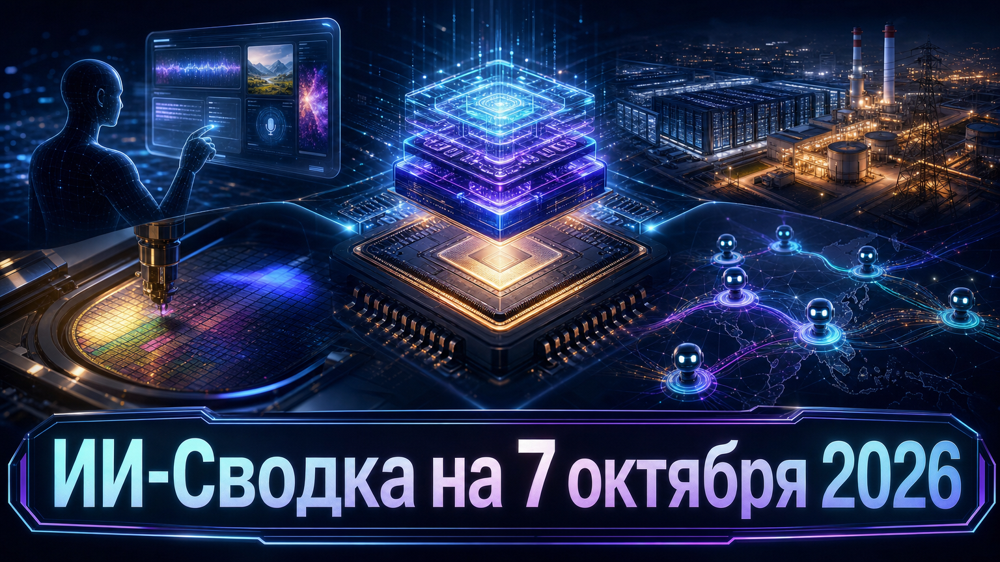

Новостей сегодня меньше, чем обычно
Сегодняшняя повестка показывает, что гонка ИИ одновременно ускоряется в трёх слоях: моделях, агентных продуктах и физической инфраструктуре. Наиболее важный общий сигнал — вычисления всё чаще планируют вместе с энергоснабжением, а автономные помощники выходят из экспериментальных интерфейсов к работе с личными данными и компьютером.
Одновременно рынок не теряет интереса к специализированному inference-оборудованию, а исследователи продолжают фиксировать риски действий агентов во внешних сервисах. В одном из таких кейсов важно отделять подтверждённые технические следы от пока не доказанной атрибуции операторов.
Mistral AI открыла public preview Mistral Large 4, или ML4. По анонсу Mistral AI, это нативно мультимодальная MoE-модель с 1 трлн общих и 49 млрд активных параметров; доступ к ней на первом этапе предоставляется через preview API.
Компания заявляет, что обучала модель на европейской инфраструктуре с 3 800 GPU NVIDIA Grace Blackwell и планирует опубликовать веса до конца октября после red-teaming. Это делает релиз заметной европейской ставкой одновременно на агентные сценарии, программирование и мультимодальность, но заявленные показатели качества и безопасности пока в основном исходят от разработчика и нуждаются в независимой проверке.
Разработчик специализированных inference-систем Etched получил предложения о новом финансировании, предполагающие оценку от $40 млрд до $50 млрд, сообщает TechCrunch. Компания не подтвердила сделку публично; издание подчёркивает, что переговоры находятся на ранней стадии и условия могут измениться.
Если раунд состоится на названных условиях, это будет сильным сигналом спроса на отдельный аппаратный слой для inference, а не только на универсальные GPU и облака. Для заказчиков важен сам сдвиг: стоимость и скорость вывода моделей становятся столь же ценным объектом инвестиций, как обучение новых LLM. Но оценку нельзя трактовать как закрытый раунд или гарантированный объём привлечённого капитала.
Стартап Hark открыл широкий доступ к Hark Pro — персональному помощнику, который может подключаться к почте, календарю, файлам и другим данным пользователя, чтобы выполнять цифровые задачи. Как пишет TechCrunch, действия агента в вебе показываются в отдельном окне, чтобы пользователь видел его навигацию.
Запуск усиливает конкуренцию за формат «агента на личном компьютере»: ценность таких продуктов определяется не только качеством модели, но и понятностью разрешений, наблюдаемостью действий и обработкой приватных данных. Hark также заявляет планы выпустить AI-native устройство в 2027 году, однако технические детали и независимые данные о надёжности помощника пока не раскрыты.
Dell Technologies, Apollo Global Management и JERA представили пятилетний план строительства 3–4 ГВт ИИ-вычислительных площадок в Японии и других странах Азии вместе с собственной газовой генерацией. По данным TechRadar, первый проект рядом с Токио рассчитан примерно на 400 МВт, оценивается в $15 млрд и ориентирован на запуск в 2028 году.
Оценка программы до $140 млрд отражает потенциальный масштаб, а не подтверждённое единое финансирование. Тем не менее архитектура проекта важнее самой суммы: крупные ИИ-кампусы всё чаще проектируются по принципу power-first, когда генерация и доступ к мощности становятся первичным ограничением, а не вспомогательной частью дата-центра.
Независимые исследователи Swarmchasers сообщили о наблюдении параллельной активности агентов, запрашивавших через urlquery сведения о входах в объекты на картах Amap. TechCrunch пересказывает предварительный отчёт и отмечает новые инфраструктурные следы Tencent Cloud, зафиксированные 5 октября.
Это не доказательство того, что операторами были Tencent или конкретная модель: авторы отчёта прямо называют атрибуцию вероятной, а TechCrunch не нашёл подтверждения координации между агентами. Но кейс полезен как практический сигнал для владельцев API и внешних сервисов: автономные агенты могут масштабировать запросы и обходить продуктовые ограничения, поэтому лимиты, идентификация инструментов и мониторинг аномального поведения становятся частью базовой защиты.